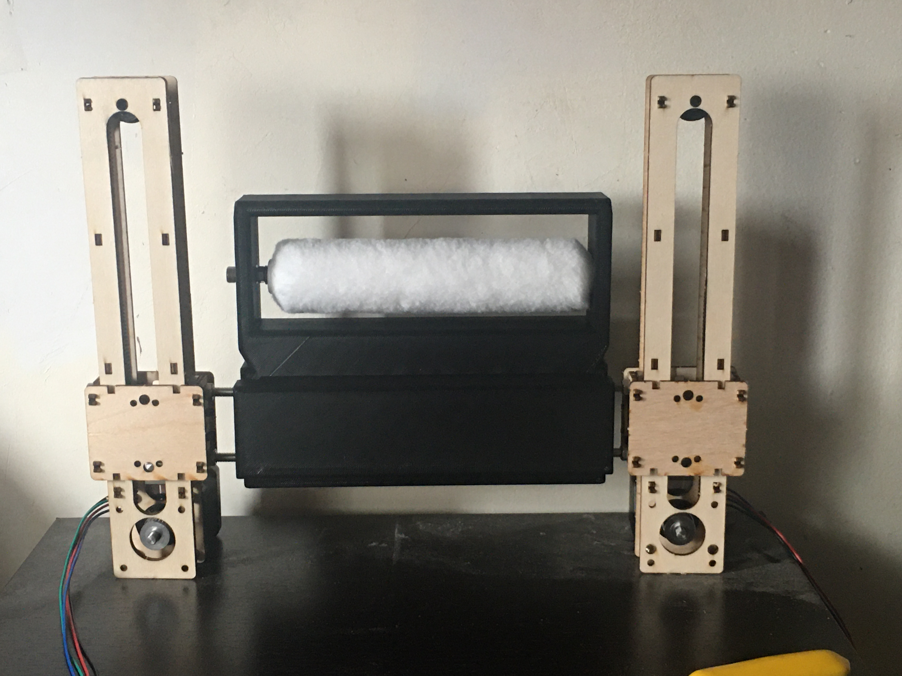

FINAL PROJECT
After 7 long weeks, our course comes to an end as we combine the lessons we learned in class to create our final project. My final project is a fairly simple one: a wall-painting machine that when activated on a computer, would paitn up and down a surface. To create this project, I integrated my machine work in week 10 with networking learned in week 9, along with 3D design in week 6. I received my 3D printed piece from my instructor, and I was able to attach it to the wooden machines i constructed. Using the esp32 feather board, i was able to send a message from my Firebase to the board so that the motors could lift the motors upwward. Below is the first prototype of the project:
And here is the code I used:
The Firebase:

The serial monitor of the Huzah board:

Malfunctioning
After building the prototype, hooking up wires to the motor and microcontroller, I set up code and was expecting great results. However, I ran into a multitiude of errors in Aduino IDE as I wanted to have both motors move at the same time. Luckily Mr. Melenbrink and Ms. Shen were able to provide helpful input to modify my code so that the motors would activate. Once again, I expected my project to take flight, only for another obstacle to take place. Despite the proper code and wiring, only one of the motors would not operate. The error happened as the motor driver attached to it appeared to have been damaged, possibly due to the capacitors having an effect on it. It was extremely frustrating, putting hours into it just to fall so close but so short in the end. The working motor coulding move with the other immovble motor attached to the paint roller, so as a last ditched effort I removed the defect motor along with the wooden parts. i was left with one working motor, that still wasn't strong enough to move the roller. T add insult to injury, it couldn't stand up on its own so to get a somewhat working project I set it vertically over a piece of paper. I put paint over my roller and hoped for the best.
PROJECT IDEAS
Mosquito-Killer
My first idea for my final project was a random thought. In our class' 1st breakout room, I noticed a mosquito in my room and started thinking about how they bugged me all summer, especially when I was sleeping. I brainstormed about making something that would zap mosquitos into oblivion, but it seemed impractical and honestly, pretty dangerous.
Bottle-Cap opening robot
This robot would grab a bottle using two claws, and a robotic arm at the top would place a bottle opener on the cap of something similar to a beer bottle to open it. I got the idea from my Dad's cap-opener on his keys and wanted to make a new design and put it on a robot. I took the advice of creating something that makes us lazier people
Wall-Painting Robot
This robot would go up and down walls, painting as it goes up and down. i would attached wires to the robot that are connected to nails on a wall, so that it can pull its self up. To paint the wal, I would add a roller underneath the bot.